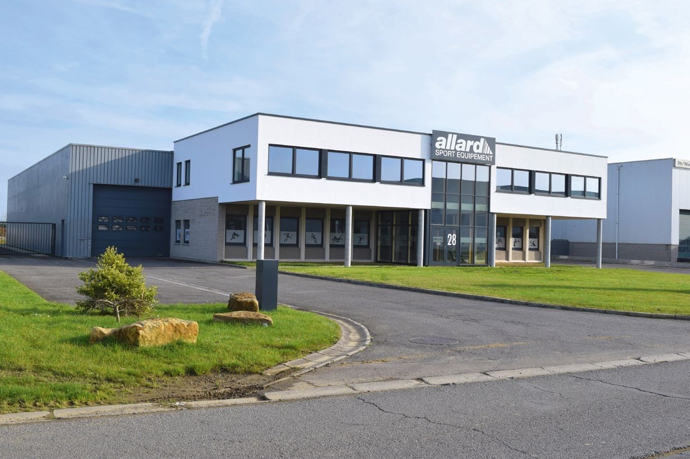

À propos
Allard Sport Équipement est une société anonyme belge, installée à Arlon, dans la province de Luxembourg. Elle fournit et installe du matériel sportif depuis 1983.

Notre histoire, en dates.
Chaque date vient d'un registre public ou d'un avis officiel. L'histoire de la famille Allard avant 1983 [à confirmer].
Une entreprise familiale ? Le nom de l'interlocuteur et l'histoire à raconter : [à confirmer].
- 1983
Création de la société, le 29 décembre.Source : Banque-Carrefour des Entreprises
- 1984
Premiers salariés : Allard Sport est employeur depuis le 1er février 1984.Source : Banque-Carrefour des Entreprises
- 1995
La société devient ALLARD Sport Equipement S.A.Source : Banque-Carrefour des Entreprises, 06/04/1995
- 2001
Allard Sport est à Virton, avec un magasin et un dépôt, et une société sœur à Écouviez (France) pour la Meuse, la Meurthe-et-Moselle et les Ardennes. Sa promesse : « Confiez-nous le montage, l'entretien et la vérification de vos installations sportives ».Source : archive du site allardsport.com (archive.org, 2001) ; registre français des entreprises
- 2009
Le siège s'installe au Zoning de Weyler, à Arlon, le 1er juillet.Source : Banque-Carrefour des Entreprises
- 2021
Lycée technique agricole de Gilsdorf (Luxembourg) et Province de Hainaut.Source : Avis TED 255025-2021 et 55103-2021
- 2023
Lycée technique pour professions de santé, Strassen (Luxembourg).Source : Avis TED 739444-2023
- 2024
Commune d'Anderlecht : les cinq lots du marché de matériel de sport.Source : Avis TED 510961-2024
Ce que nous faisons.
Nous vendons du matériel de sport en gros et au détail, nous posons les équipements et nous refaisons les sols des salles.
Nos clients sont surtout des acheteurs publics (communes, provinces, écoles, lycées), des clubs et des centres sportifs. Nous vendons aussi aux particuliers.
Au Grand-Duché de Luxembourg, plusieurs marchés ont été remportés avec un partenaire luxembourgeois [à confirmer].
- Raison socialeALLARD Sport Equipement S.A.
- SiègeZoning de Weyler 28, B-6700 Arlon
- N° d'entreprise0425.069.440 (TVA BE 0425.069.440)
- RegistreRC Arlon n° 17644
- ActivitésCommerce de gros et de détail d'articles de sport ; menuiserie et finition (autorisations BCE)
- Équipe[à confirmer]
Un projet, un devis, une question ?
Appelez-nous ou décrivez votre besoin : nous revenons vers vous avec une proposition chiffrée. Délai de réponse [à confirmer].
+32 63 57 80 85- AdresseZoning de Weyler 28
B-6700 Arlon, Belgique - E-mailinfo@allardsport.com
- HorairesDu lundi au vendredi, de 8 h 30 à 17 h [à confirmer]
- AccueilSur rendez-vous [à confirmer]